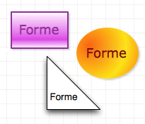

Formes

Une forme est un objet à deux dimensions qui peut contenir du texte et peut être rempli avec des couleurs et des images. Vous pouvez créer des formes à l’aide de l’outil Forme ou de l’outil Crayon ou les faire glisser depuis des patrons. L’outil Texte peut également être utilisé pour créer des formes spécialement adaptées pour comporter du texte.
Vous pouvez sélectionner une forme à l’aide de l’outil Sélection, puis utilisez les inspecteurs pour la modifier. Vous pouvez également utiliser l’outil Sélection pour déplacer, redimensionner ou faire pivoter une forme. Si vous avez des formes personnalisées dessinées à l’aide de l’outil Crayon, vous pouvez utiliser l’outil Sélection pour modifier leurs points.